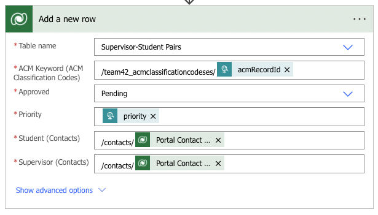

Gantt Chart
Requirements
UCL’s Computer Science department has recently been transitioning several day-to-day activities in the form of business transformation as workflows. In partnership with Microsoft, several tools and systems have been requested across the teaching and learning domains.
The highest burden faced by our client, Dean Mohamedally, is the Final Year Project Supervisor Allocation process which is being done manually. This involves finding a supervisor who would be good a match for each of 160 students in the class, which is a time-consuming process.
The current solution is not fit for purpose and involves multiple stages of spreadsheets, conflicting requests, and lack of timelines.
The process should allow a first-round survey to all final year students, to state their degree level, and whether they intend to do research only, industry only, or don’t know as their profile option.
Visibility of projects is a key ask for the academics - this includes research projects listing, ACM classification keywords of the academics, and visibility of the industry projects lists once they are ready. A solution that enables staff workloads to be input is needed at this point as those academics that have capacity to supervise and are not taken by students for their research projects, should then automatically make themselves available for projects with industry.
The second-round survey is the matching of the students to the research projects. This needs timeframes to be set up that mark key dates: when projects are advertised, when the projects are taken by a student, or if a student is in discussions with an academic for a project. Only once this is facilitated, it will be then signed off as allocated as FYP for Research Academic Projects.
After that stage, or in parallel, for students that have said yes to wanting industry projects on the UCL IXN, they will fill in a separate second round survey, called the UCL Motivation Tracking Survey. This data then profiles capabilities and allows a Teaching and Learning member of the team to import the student grades for the IXN and Strategic Alliance Teams to begin sourcing appropriate projects in those quantities.
By March this data is completed and those who said they did not know will be once again advertised to come forward to choose in a 3rd cycle of survey forms.
Academics need a listing that enables them to see, at a glance, who they are supervising as final year projects are allocated.
-
Easy-to-use interface for staff, students and administrators
-
Bring all steps of the FYP allocation process to one place
-
Store all relevant data in one location
-
Facilitate unsupervised matching
-
Automate supervised matching
At the start of our project, we interviewed 4 students, 2 academics, and the administrator who is overseeing the FYP supervisor allocations this year.
We decided to go with a semi-structured interview as the method of gathering information from would be users. We probed topics such as what they would like to be able to do with a new system and thoughts they had about the current system. We deemed this more appropriate than a questionnaire as people are more reluctant to be thorough and descriptive in questionnaires. We felt that it was also appropriate to ask open interview questions to really understand what the users want.
Below are notable points from answers to the questions we asked.
-
The process struck me as unorganized. I had trouble finding the place to look for the list of supervisors – it turned out it was on the systems engineering Moodle page.
-
I had a difficult time reading through the list of available supervisor options. A code was used to list their ACM keywords, so I had to look up the code every time. I wish it was easier to browse the list of supervisors. Also, my device had a glitch with the file that listed all the ACM keywords, which made browsing more difficult.
-
The process itself was okay, though I would’ve preferred a separate Moodle page for it and an email that would notify everyone simply about the deadlines.
-
It would be great to have everything happen through one medium. I managed it this year, but it would’ve obviously been easier and cleaner if everything went through a single medium, rather than many strewn forms. I suspect the process would’ve been more on-schedule as well if the administrators didn’t have to manage all these forms and mediums of communication.
-
If possible, that sounds great! But it should certainly be linked with UCL so I don’t have to remember more credentials. I also want it to be easily memorable and accessible so I don’t keep forgetting what the website’s called or where to find the link.
-
It would be great to have everything happen through one medium. I managed it this year, but it would’ve obviously been easier and cleaner if everything went through a single medium, rather than many strewn forms. I suspect the process would’ve been more on-schedule as well if the administrators didn’t have to manage all these forms and mediums of communication.
-
If possible, that sounds great! But it should certainly be linked with UCL so I don’t have to remember more credentials. I also want it to be easily memorable and accessible so I don’t keep forgetting what the website’s called or where to find the link.
-
On average, I have had success with it. I usually fill most of my spots during unsupervised allocation, which is nice because I get to pick who to supervise.
-
It’s alright, this year they sent out a new, well-formatted form for us to register as supervisors. Despite the fact it was a bit long, I don’t have trouble with it. I have found some great students to supervise this way. The only issues I've ever had were with students who were allocated to me by the administrator, because sometimes we had little in common and I felt I couldn’t provide the best advice on their dissertations.
-
I want to convey my research groups and link students to my previous works. In previous years we were asked to provide our ACM keywords, and I think that’s also a good metric. Some think it’s outdated but I think in this case, it is fit-for-purpose.
-
I like to leave a customized message because I usually have specific projects in mind and want students who are interested in them to contact me directly.
-
I want to convey I am only available to supervise industry projects because I am not a researcher.
It can take a lot of time to read through students’ answers and the available staff and try to match them such that everyone is happy. There are a lot of dimensions to consider, so this can be quite a taxing task. There are also some students who don’t find a supervisor on their own and then don’t fill the form in, so I have to chase them down. Sometimes there are also students and academics who agreed to work together but didn’t tell us, and this causes confusion and a lot of back and forth. On top of all of this, I need to orchestrate the entire process, from preparing forms, to getting that data out in a readable format, to making sure students and staff are on board and well informed. It’s generally a lot of work.
What are you most looking forward to getting out of this project?I am excited to not have to spend as much time organizing each step and doing everything by hand. It took a very long time to come up with a document for students' supervisor options. I had to create a list, too, for them to see the ACM keywords. It took a very long time. If the system can handle displaying the correct inputs and outputs of data for each staff and student, that would already cut down on a big task. The automatic matching is very useful too - I could free up time to spend it better dealing with outliers or special cases. I also think this could be replicated and used in many other situations and potentially by other institutions to solve similar problems.
What functionalities do you see as essential?I want it to be possible for professors to agree with students to work together before doing any automatic matching. Please also make sure the administrator knows of all such pairs made. I want to use ACM keywords to implement the matches. Academics should be asked to select their ACM keywords, and I also want it to be possible for students to select some ACM keywords they want to be matched by. This is particularly for students interested in research. A page where the students can just type a link and see all the available supervisor options would be great.
 Supervisor
Supervisor
|
Use Case |
Action Flow |
Result |
|
Register As a Supervisor |
|
Submitted information for students to view in unsupervised matching and to be used in supervised matching. |
|
View or Edit Application |
|
Supervisor viewed or edited their Supervisor Application responses. |
|
Register a Supervisee |
|
Supervisor informed the administrators they will be supervising the selected student for their Final Year Project. |
|
View Supervisees |
|
The supervisor may view a list of all the students they will be supervising. |
|
Edit Supervisees |
|
Edited details about a student they will be supervising. |
|
Remove Supervisee |
|
Removed record of student they will be supervising. |
|
Use Cases for Students |
||
|
Use Case |
Action Flow |
Result |
|
Browse Supervisor Options |
|
Can view information about which academics are available to supervise Final Year Projects. |
|
Apply For Automatic Matching |
|
Submitted application to be automatically allocated a supervisor. |
|
View or Edit Application |
|
Student viewed or edited their Student Application responses. |
|
View Allocated Supervisor |
|
Student may view the supervisor they will be working with for their Final Year Project. |
|
Use Cases for Administrator – Portal |
||
|
Use Case |
Action Flow |
Result |
|
Trigger Automatic Matching |
|
Available students have been matched to available supervisors. |
|
Use Cases for Administrator – Model-driven App |
||
|
Use Case |
Action Flow |
Result |
|
Approve or Reject Matches |
|
Accepted or rejected a match made automatically. |
-
Must-have
- The system should be able to allocate Students to Professors based on common interests and expertise
- The system should be able to allocate Students to industry projects based on common interests and expertise
- Students and Professors should be able to fill in forms to provide all relevant information.
- Existing data concerning users may be imported from external sources if necessary.
- Users may be pre-allocated under special arrangements, so as to remove them from the pool of entities to be allocated.
- Administrators are able to approve/reject matches, whether they are made through automatic allocation or through pre-allocation.
- Any matches that have not been approved by the administrators within a certain deadline are automatically approved.
- Data pertaining to Students, Professors, or projects should be adequately and consistently stored as to make it accessible to all those who have the need and permissions to use it.
-
Should-have
- Users may modify information about themselves that they previously filled out, by resubmitting a form or modifying previous answers.
- A user whose data is imported or inferred should be asked to check, amend, and confirm that this data is correct.
- Data from forms that users have previously submitted is preserved such that it does not need to be resubmitted for every recurring event. For example, an Academic who tends to supervise a similar project each year should be able to easily resubmit their form submission from the previous year.
-
Could-have
- Information concerning academics may be imported from modules they teach, research papers they have published, or previous acheivements/credentials.
- Information concerning students may be imported from modules they have completed (and performed well in), and any known previous acheivements.
-
Won't have
- This project will not concern the logistics of post-allocation, such as contract generation, or communication between students and supervisors; this project concerns
Research
Luckily, a much easier and cleaner option was open to us. Our client for the project was Microsoft. As such, our project was particularly suited to using Microsoft products to increase the speed of our development.
After researching Microsoft development products, we decided to research Microsoft Power Apps. To do so, we both read through the official documentation, and discussed this service at length with our clients representing Microsoft (Lee Stott, Ayca Bas), and a consultant representing the Ashton Court Group (Chris Seely), who acted as a mentor for us during this project.
Following these discussions and our research, it was determined that we would use the Microsoft Power Platform to develop our project. The reasons for this are as follows:
-
Dataverse Integration [1]
The Dataverse acts as a centralised location to store tables of data. It is also designed to be integrated into Power Apps projects; one may directly access the Dataverse through Power Apps. Data may be easily retrieved, modified, deleted, or created, in the Dataverse from Power Apps using cloud flows.
Through cloud flows, developers can also automate several interactions with the data relevant to a certain project. This is useful for many purposes within our project. For instance, within our project it is expected that we may display a page of information about supervisors to students. Using cloud flows, this page may be updated whenever there is a new response.
Therefore, we predicted that the seamless integration between the Dataverse and Power Apps would prove useful throughout our project, as almost all of the requirements of our project concern the manipulation of data. -
Rapid Code Deployment [2]
One of the primary purposes of using Power Apps is for rapid project development. Time would largely be the limiting factor of the development of this project. Power Apps lends itself to this purpose - if required, one can deploy a website with zero code. While we will use code to perform more advanced functions, using Power Apps we were able to create a host a website immediately.
For instance, the Power Apps Canvas may be used to create components quickly without needing to write any html, Power Automate may be used to perform logical processes to data, and website organisation is already set up, allowing one to tweak website settings or structure at will. -
Multiple Platform Types [2]
For our app, we have three main user types, as detailed in the requirements section. Each of these user types have different needs and access levels. Within Power Apps, there are several types of platform a developer may create, each with different capabilities and use cases. Of these, there are three platforms which may be suited to our project - Canvas Apps, Portals, and Model-Driven Apps.
Canvas Apps [3]
A Canvas App is useful for creating a very simple space for a user to view and interact with data. Canvas Apps are incredibly quick to create - for instance, within a few clicks and zero lines of code one may create a Canvas App to display a table imported from a CSV file stored in the cloud. The drawback of a Canvas App is its simplicity - a developer is not afforded much customisation, and fewer opportunities are present for complex interaction between a users and the data.
Portals [4]
A Portal, like a Canvas App, allows a developer to create a space for users to view and interact with data. However, a Portal is useful for giving a user for complex ways to interact with said data. For example, a developer has greater control over the view and layout of a deployment, or for instance can enable a developer to create more advanced forms for the user to fill out. In a Portal, a user still remains somewhat limited in what they have access to - a user is not naturally given permission and an easy way to interact with data. Therefore, a Portal is great for a middle-ground, when a user will need to make more complex interactions with the project, but only requires limited access to the database and needs a straightforward layout to perform a few specific procedures without being swamped with a complicated page of information.
Model-Driven Apps [6]
A Model-Driven App affords the user with a high degree of visibility and control over tables in the database. Through a PowerBI dashboard [7], they may also see more complicated insights in the data, visualised. The drawback to this is that a user may not always need such close interaction with the database. Additionally, there is limited room to control the user interface of a Model-Driven App - it has fewer options to be as attractive and simple as a Portal or Canvas App. Therefore, it is suited to a situation where the user needs a high degree of interaction with a large portion of the database, and will be have some pre-requisite knowledge of how to navigate and use it.
To reflect on our user types; Firstly, we have an administrator who needs a large amount of control over the data stored in the solution and can be easily familiarised with the project. Secondly, students and professors - who need a high amount of controlled interaction with the data, but will not necessarily all be familiar with how to use the project.
As a result, it appears the appropriate platforms to build our project with would be a model-driven app for the administrator, and a portal for the students and academics.
Project Operations [5]
A Power Apps solution may be extended using Project Operations. As described in Microsoft Official Documentation, Project Operations can be used for "easy resource workload distribution" and "skillset matching to meet demands" [5]. This fits our requirements well, as we need to match the skillsets of students and academics as closely as possible to find the optimal project for both. This would eliminate the need to manually develop a matching algorithms ourselves - development would be significantly sped up as Project Operations would generate this algorithms for us
There are, however, drawbacks to using Project Operations. These are:
- Limited Control - while a built in allocation algorithm would speep up development, naturally there would be a more limited amount of control in its implementation. For instance, micro-parameters may not be available for a developer to tweak, and a developer is not give so much control of the algorithms itself which is used in allocation.
- Licence Fees - to use Project Operations, one must pay a licence fee in addition to the Power Apps fee [8]. For a basic plan, this is £90.50 per user. If the matching algorithm can be coded by hand, the amount of money saved would be immense in the long run - especially when considering there would likely be several users to pay for.
- Longevity - linked to the above point on limited control, using Project Operations makes the matching algorithm entirely tied to and reliant on Project Operations. The world of technology moves quickly, and it is not unlikely that at some point in the future, Project Operations could become obselete, or be changed in a way which affects our project.
- Project Specialisation - using an out-of-the-box algorithm from Project Operations makes it more difficult to specialise and optimise this algorithm to suit our project. For example, it is difficult to specify if we would want to use an algorithm which prioritises the quality of matches compared to one which prioritises making sure each academic has at least one match.
- Reproducibility - the Project Operations allocation algorithm is reproducible in the sense that it is straightforward, and so the process for using it in two different projects is simple. However, for projects with more nuances, the stripped-down interaction with the algorithm means one will struggle to apply more complicated aspects to similar projects. For instance, take an example of a similar project such as allocating teaching assistants to modules. If an allocation algorithm were manually coded, one could read the previous for help, or code it in a more general way which allows the algorithm to be applied to a range of things whilst maintaining the ability to cater to nuances. If Project Operations is used, a developer would simply need to build the solution from square one again, and may again struggle to deal with specific issues within a particular project.
| [1] |
Microsoft Corporation, "What is Microsoft Dataverse?" [Online]
Available: https://docs.microsoft.com/en-us/powerapps/maker/data-platform/data-platform-intro [Accessed: Mar. 28, 2022] |
| [2] |
Microsoft Corporation, "What is Power Apps?" [Online]
Available: https://docs.microsoft.com/en-us/powerapps/powerapps-overview [Accessed: Mar. 28, 2022] |
| [3] |
Microsoft Corporation, "What are Canvas Apps?" [Online]
Available: https://docs.microsoft.com/en-us/powerapps/maker/canvas-apps/getting-started [Accessed: Mar. 28, 2022] |
| [4] |
Microsoft Corporation, "What are Power Apps Portals?" [Online]
Available: https://docs.microsoft.com/en-us/powerapps/maker/portals/overview [Accessed: Mar. 28, 2022] |
| [5] |
Microsoft Corporation, "Project Operations" [Online]
Available: https://dynamics.microsoft.com/en-gb/project-operations/overview/ [Accessed: Mar. 28, 2022] |
| [6] |
Microsoft Corporation, "What are model-driven apps in Power Apps?" [Online]
Available: https://docs.microsoft.com/en-us/powerapps/maker/model-driven-apps/model-driven-app-overview [Accessed: Mar. 28, 2022] |
| [7] |
Microsoft Corportaion, "Microsoft Power BI: Data Visualisation" [Online]
Available: https://powerbi.microsoft.com/en-gb/ [Accessed: Mar. 28, 2022] |
Algorithms
There are only two algorithms used in our entire solution.
-
There is a huge algorithm that we have created for the automatic mathing of supervisors to students based on whether they share a common ACM Keyword. More information about this algorithms code can be found in the implementation section.
-
There is a small algorithm, implemented using a PowerAutomate cloud flow, to update students and supervisors response table records when an administrator either approves or rejects a match proposed by the above algorithm. More information can be found in the implementation section.
UI Design
System Design
The heart of this project is Power Apps, through which we did most of our development. It dynamically generates the Portal and Model-Driven App using Liquid to populate the Portal. The Portal is populated with data stored in Dataverse, which Power Apps communicates with and provides an interface for development (directly in Power Apps or through the Model-Driven App). Power Apps also integrates Power Automate to perform logical operations on Dataverse data based on triggers from the Portal interface (e.g., form submission, which is interpreted as a record addition). Power Apps also supports custom JavaScript code for additional custom functionality, which we used to implement automatic matching functionalities. The logistical aspects of each of these functionalities (aside from the custom JavaScript) is taken care of by Power Apps.

Below is a site map depicting the pages which can be accessed, in any order, with each of the 3 possible web roles.

Our solution's database consists of 13 tables, 1 default table, and 12 custom ones. More detailed information about these tables can be found in the implementation section, however, simply, they are as follows:
Default Tables-
Contact
-
ACM Classification Codes
-
FYP Options
-
Research Groups
-
Student-ACM
-
Student Responses
-
Student Topic Options
-
Supervisor-ACM
-
Supervisor Responses v2
-
Topic-ACM Map
-
Research Group-ACM Map
-
Supervisor-Student Pairs
The tables are related in the following fashion utilising multiple 1:N, N:1, and N:N relationships. More info on this can also be found in the implementation section.
There are no public facing APIs or packages involved in our project. All of the code is entirely self contained within the localised content of the pages in our portal. There are multiple APIs that exist within our solution, mentioned in the implementation section. By nature of how they are created within PowerApps, they are usable by the public, however these are purely to kept private to stop any potential leaks of information.
Since, as mentioned, the code that completes our matching algorithm is embedded into the portal page containing the button for the administrator to run it, there are no packages involved, and no dependencies. All of the functions used in the code utilise JavaScript functions that almost all modern browsers have support for.
Implementation
Web Roles are very important to our solution as they dictate what any given user can and can't see/do on our portal. There are three roles available to a user - Student, Supervisor, and Administrator. Administrator roles should be assigned by the department using the Portal Management section of our solution. The other two roles, Student and Supervisor are chosen by the user when they log in for the first time.
When a user first signs in on the portal's landing page, they are presented with this screen. After using the radio buttons and submission button to select their role, they are taken to their chosen role's respective home page. They will not have another opportunity to change this and must instead ask an administrator to change it for them.
After clicking the above button, the following code will run, triggering the flow that will assign the correct web role to the current user based on which radio button they selected.
After a user has selected their role, whenever they next sign in, they do not see this role selected screen and are instead directed to their home page, as mentioned before. This is the code that does so.
These roles are used to stop a user from seeing content that they should not be able to. Similar to the above code, liquid is used on each of our Portal's web pages to check what roles are assigned to the current users contact. If they do not have sufficient roles, they are prompted to return to the sign in page.
Flows are pieces of logic which allow some level of automation to otherwise static objects, such as tables. Flows can be triggered by several things, like the manual press of a button, the modification of a particular table, or the arrival of a certain time of day. They can be used to do things like edit data in a table or send an email. Below are some of the most important ways in which we used flows:
-
Add Contact Field to Supervisor ACM
This flow is triggered by the addition/modification/deletion of a record inside Supervisor Responses v2. When a Supervisor Application is submitted/modified/deleted, a record is created inside Supervisor-ACM and the ID, ACM Keyword, and Supervisor Response ID fields are populated in that record. This flow is used to populate the remaining Contact field of this new record. The flow does this by extracting the Contact field from the newly modified Supervisor Response record and inserting it into the Supervisor-ACM records belonging to that supervisor.
-
Create Student-ACM Record
This flow is triggered by the addition/modification/deletion of a record inside Student Responses. When a Student Application is submitted/modified/deleted, a record is created inside Student Responses. We also want to create records inside Student-ACM, populating the columns ACM Keyword and Contact. The First-choice Interest field is extracted from the submitted record, and this is mapped to ACM Keywords using the Topic-ACM Maps. A record is created for the student associating them with each of these ACM keywords.
-
Insert Topic-ACM Records
This flow is triggered manually, and was created for the purpose of efficiently populating the lookup table which maps student topics to ACM keywords. It works by extracting all ACM keywords pertaining to a certain section and creating a row in the lookup table mapping the keyword to a particular student topic. For example, it may select all ACM keywords beginning with '2.1', and create a record mapping them to 'Algorithms and CS Core Theory'.
-
Assign Web Role to Contact
This flow is triggered when a user signs in on the Portal for the first time and selects a role. The flow is expecting a request with a JSON payload of a specific shape. This payload contains the id of the currently signed-in user, along with the id of the web role that they just selected. The flow then relates the record of the currently signed-in user in the Contact table with the record of the selected web role in the Web Roles Table. Doing this gives the permissions of that web role to the user.
-
Update Student Responses Availability
This is the longest and most complex flow in the solution and is triggered by the addition/modification of record inside the Supervisor-Student Pairs table. When a pair record is added or editted in this table, there are two things that may happen depending on the value of the 'Approved' field in the record in focus.
If this has a value of 'Rejected,' meaning the supervisor didn't approve the match, the student response of that match has it's 'Availability' field set to 'Yes.' Then, if the matches supervisor has a remaining capacity less than the actual capacity, the supervior's 'Availability' is set to 'Yes' as well.
If instead the value is 'Approved,' if the matches supervisor's remaining capacity is equal to 0, meaning they cannot facilitate any more students, the supervior's 'Availability' is set to 'No,' while the student's is 'Yes.' The pair's 'Approved' field is also set to 'Rejected.' If instead the supervisors remaining capacity is not equal to 0, it is decreased by 1, and the student's 'Availability' is set to 'No.'
-
Post Match Data to Supervisor-Student Pairs Table
This flow is triggered when a http POST request is sent to a specific API, with a payload containing JSON data in a particular format. When the API receives this POST request, the flow begins and extracts the JSON from the payload. This JSON data is the output of the matching algorithm. It contains a list of supervisors, each with a list of students that they matched with and the reason for the match (common ACM keyword). These are each extracted by the flow and inserted into the 'Supervisor-Student Pairs' table. From the JSON data, the supervisorResponseIds and studentResponseIds are used to get the name of the user that submitted the response. This is what is entered into the table, rather than the responseId iteself. Each inputted pair is also given a default 'Approved' field value of 'Pending' which can later be edited by the administrator.
- HTTP Get Flows
These 5 flows all work in the exact same way and exist for the same purpose - to extract data from our database into the JavaScript code that is powering the matching algorithm process. These flows are all triggered when a the flow's API receives an http GET request. This is a plain request with no payload. Each flow will then send back the appropriate data from the correct table. Not all fields are of use to the matching algorithm, so only a select few are sent back to the JavaScript in the http response. The table that has it's data pulled is described in each flow's title. These flows could be combined into one huge flow and all the data could be sent in one response, however this would be a staggering amount of data, making the response not readable at all to humans that need to possibly debug the code in the future. Seperating them also makes the JavaScript code more orthogonal as the functions are not doing more than one task.
- Get ACM Data
- Get ACM Map Data
- Get Student Response Data
- Get Supervisor Response Data
- Get Supervisor-ACM Table Data
Forms belong to tables. To create a form with X number of fields, you must first create a table with the same matching X number of columns. The data collected by filling out this form is stored in this table in the respective columns. There are 2 main Insert forms used by the portal:
-
Supervisor Application
This can be found in PowerApps inside Supervisor Responses v2 (table) > Supervisor Responses v2 main form. It should be accessed this way to customize the fields that appear on the form (and each individual tab). It can be further customized through Portal Management > Advanced Forms > Supervisor Application. Here, it is possible to reorder the steps of the form and manage form Sessions. To configure subgrids on this form, you should go to Portal Management > Basic Forms > Supervisor Application v2 > Related > Advanced Form Metadata. It may be confusing that there is both a Basic Form and an Advanced Form for the supervisor application, however they are both linked to the Supervisor Responses v2 main form (under the Supervisor Responses v2 table), so they work in harmony. -
Student Application
This can be found in PowerApps inside Student Responses > Student Responses main form. It should be accessed this way to customize the fields that appear on the form (and each individual tab). It can be further customized through Portal Management > Advanced Forms > Student Application. Here, it is possible to reorder the steps of the form and manage form Sessions.
There are 5 basic forms used by the portal:
-
View Student Application
This basic form is an edit form. This allows students who have already submitted an application to view and edit their application. The ability to edit their application is entirely at the discretion of the administrator, who may want to limit this capability. If so, the administrator must visit Portal Management > Basic Forms > View Student Application and set the Mode to ReadOnly. Then the administrator should also edit the app by going to Power Apps > Apps > FYP > View Student Application page. Select the form on the page and change the mode to ReadOnly in the right-hand menu bar.
-
View Supervisor Application
This basic form is an edit form. This allows supervisors who have already submitted an application to view and edit their application. The ability to edit their application is entirely at the discretion of the administrator, who may want to limit this capability. If so, the administrator must visit Portal Management > Basic Forms > View Supervisor Application and set the Mode to ReadOnly. Then the administrator should also edit the app by going to Power Apps > Apps > FYP > View Supervisor Application page. Select the form on the page and change the mode to ReadOnly in the right-hand menu bar.
-
Submit Supervisor-Student Pair
This is an insert form. Once a supervisor agrees verbally with a student to supervise them, they are required to fill out this form to report to the administration who they will be supervising and optionally provide a project title and description.
-
View Supervisee Responses
This basic form is a ReadOnly form. Once supervisors has submitted notice they will be supervising a specific student (basic form 3, above) they will be able to view their responses through this form. They cannot edit their response, but they can delete form submissions and add more submissions.
-
Supervisor-ACM for subgrid
This is a basic form used for selecting ACM Keywords through a subgrid (reference Custom N:N relationships). The subgrid “create” button (which appears as “Add ACM Keyword”) calls this form and ACM Keywords are added one-by-one through it.
If you want to manually add a record to a table, you go to the Table Name > Data > Add record. This opens a new tab and shows the default Information (main) form, which is simplistic by default and may only show 2 fields. To alter this and allow more fields to be populated this way, edit the Information form (of type Main, as opposed to Card or QuickViewForm). If you have multiple main forms, the pop-up tab may open in either of the main forms. You can select which main form you want to fill out using the drop down menu on the form tab. Advanced forms can support multiple steps, branching (I.e. conditional steps), and subgrids, all of which cannot be achieved with basic forms. Here is more information on basic forms and advanced forms.
Liquid is a template language, written amongst HTML that uses a combination of objects, tags, and filters inside template files to display dynamic content. Liquid, like any template language, creates a bridge between an HTML file and a data store — in our context, the data we use for matching.
Liquid can be learnt fairly quickly using the official documentation. Here are some examples where we used Liquid in our project:
-
Hiding Sensitive Data During Development
- At times during our development, we needed to display data that should be available to authenticated users only. To do this, we used Liquid control flow tags to show or hide data based on this condition:
- {% if user %}
- {% include 'my_page' %}
- {% endif %}
- If the user is not signed in, 'user' will not exist, meaning the variable holds a value of 'Nil'. This means the 'user' variable is 'falsy', causing the condition to be evaluated as false and therefore not display my_page.
- It should be noted that this is not the most sound and elegant solution to hide content from the unauthorised. PowerApps offers mechanisms to acheive this through Web Roles.
- It's often useful to have a webpage display different content depending on who the user is, and what information we have about them. Objects may have certain attributes which can be used to acheive this. As a simple example, we used:
- {{ user.fullname }}
- to display a header which display the correct name for the user that's currently logged in.
- Under different conditions, different content may need to be included in the header. We used Liquid to display all headings which should be displayed within a given Web Link Set. Here is a heavily simplified method with which we did this:
- {% for link in primary_nav.sublinks %}
- {% unless forloop.first %}
- <div style="vertical-divider"></div>
- {% endunless %}
- {{ link.name }}
- {% endfor %}
Displaying User-Specific Information
Iteration to Display Elements in an Array
We had initially decided to use Project Operations for the supervised matching section of our solution. However, after closer inspection of how the matching works in Project Operations, we decided that we wouldn’t have enough control over how students were matched to supervisors. Instead, we created a custom algorithm using Javascript.
Our matching process can be split into 5 main, distinct components.
-
Collection of Data
Since our code is written in pure JavaScript, the required data is pulled from our solution’s database using simple http GET requests. There are 5 different requests, that pull 5 separate sets of data. This data is initially collected using PowerAutomate instant cloud flows (As seen above). The flow can be broken down into three steps.
-
As you can see by this image, the flow is waiting for a GET request to its specified API. Upon receiving this request. Since the request doesnt need to send any data initially, the payload format is left empyty.
-

Next, the flow performs a ‘list rows’ operation on the specified table to get all of the lists into a JSON (JavaScript Object Notation) format. Only the rows containing data necessary for matching are included to reduce the size of the payload sent back to our code. In this case, the rows: 'acmclassificationcodesid', 'keyword', and 'id' are pulled from the 'ACM Classification Codes' table.
-

Finally, an http request of code 200 is sent back, including the JSON formatted list of data. This procedure is repeated 5 times, once for each different table that we require data from.
-
-
Cleaning the Received Data
When the data for each table is received by the code, it needs to be cleaned and put into a named JavaScript object, so that it can be easily accessed by the algorithm. Here is an example of the aforementioned get requests. The data is initially fetched from the API of the flow pulling data from the desired table. The data is then parsed into a new JavaScript object, with more human-readble attribute names. Data is also 'cleaned' where it needs to be. For example, in this function, we remove any records that do not have a specified 'responseId.'

-
Parsing of the Data
The received student data and supervisor data is then parsed into a more usable format. This is done for multiple reasons. Firstly, when a student fills out a response form, they choose which rough topics they have interests in. Each one of these topics relate to hundreds of ACM keywords. Therefore the ACM keywords need to be collated into one student response object. Secondly, when a supervisor fills out a response form, a news Supervisor-ACM table record is generated for each ACM keyword they selected as relevant to them. To make matching more simple, these too are collated so that there is only one supervisor response object per unique supervisor, having many ACM keywords related to it.
The below example shows the supervisor response parsing function. It can be seen that when sorting through Supervisor-ACM table records, responses that have a responseId that has already been used, have their ACM keywords appended to the already exisiting object, rather than creating a new one.

- Finding All Possible Matches
The next process is to find all possible students matched to each supervisor. These matches are found based on whether the supervisor and student share an common ACM keyword in their responses. If a student is found to match to a supervisor, the student's response object is inserted into an array of 'matched students' for the supervisor. This also contains the ACM keyword that they matched on, and the priority that the student assigned to it. This process is repeated for all students for all supervisors.
Below is the actual code for finding matches. It simply loops through each parsed supervisor response object (formed in the previous step) and calls the findMatchingStudents function. The findMatchingStudents function then loops through each parsed student response object and sees if the response contains an ACM keyword that is also present in the current supervisor resposne object. If so, the student object is added to the supervisors list of matched students, as described above. The list of matches to that sueprvisor is returned. This is repeated for every supervisor.

-
Ordering
Then, for each supervisor, the matches are ordered based on the priority that the student assigned to the ACM keyword that they matched with the supervisor on.

-
Reviewing the Matches
The final stage of the code for the matching process, is the matches review. For each supervisor, the matches that were found are reviewed one by one. Using the total number of unique student responses and supervisor responses, a minimum number of matches per supervsior is calculated. Each professor then has that many of their students matches 'finalised' and inserted into a final matches array. This is why the student matches list was orderd for each professor in the previous step.
This section of code also creates a list of any supervisors that were left with no students matched to them at the end of this process. This should only ever happend because there were more supervisors than students, not because there were no students interesting in doing what the supervisor was willing to supervise - although that is still theoretically possible.
In a similar way, this piece of code finds any students that could't be matched to any of the supervisors. Again, in practice this will probably never happen since the topics that student choose as interests in their response encompass a vast amount of ACM keywords. However, since it is still techinally possible, it is handled, since it would be usefull to the administrator.

-
Sending the Matches Back to Our Solution
After all of the matches between students and superviors have been reviewed, and matchless supervisors and students have been found, the data is properly formatted and sent back to our solution's database using an http POST request.

There is another flow in our solution waiting for a POST request to a specific API, expecting a payload containing a specifically shapped JSON.
The flow then iterates through the payload to extract all 'pairs' between a supervisor and student. From each pair, it takes the studentResponseId and supervisorResponseId associated with the pair. It uses these ID's to get the contacts of the people that submitted the responses.

The rest of the data in the pair is then extracted and a new 'Supervisor-Student Pairs' table record is generated.

The above mentioned 'Matching Algorithm' is the backend logic for what happens during the matching process, but how is it actually triggered?
The administrator has sole access to a page on our portal wesbite from where the supervised matching process can be initiated. The administrator is presented with instructions on how to use the page, is given a button to click, and a label displays the current status of the algorithm. This is shown below.

After the administrator clicks the button and the above described matching algorithm has taken place, the status label is updated, as seen below.

As described in the above section, the results from the matching algorithm are inputted into the 'Supervisor-Student Pairs' table, which is viewable by the administrator. Here the matches can be reviewed and then approved or rejected. When a pair record is editted as shown below, a PowerAutomate instant flow is run, which performs the following logic.

If a pair is rejected by an administrator, the involved student's availability is set to 'Yes' and if the supervisor's remaining capacity is less than their total capacity, the supervisor's availability is also set to 'Yes.'
If a pair is instead accpeted by an administrator, if the supervior's remaining capacity is equal to 0, the student's availability is set to 'Yes,' the supervisor's availability is set to 'No' and the pairs status is set to 'Rejected.' Otheriwise, the students availability is set to 'No' and the supervisor's remaining capacity is reduced by 1.
The administrator should review matches and rerun the algorithm until they are completely satisfied with the outcome.
-
Contact Table
Stores information about persons with whom a business unit has a relationship, such as customer, supplier, and colleague. Keeps track of who is signed into a portal. More Information.
-
ACM Classification Codes
Stores each ACM Classification Code and corresponding Keyword. The display names should be followed instead of the names (in form team42_*) of the columns. -
FYP Options
Temporary table storing supervisor responses in an unordered way. This data will be mapped into the Supervisor Responses table. -
Research Groups
Single-column table storing all research groups the supervisors are part of. This table is up to date as of 03/2022 and should be manually kept up to date with new (relevant) research groups if they appear. -
Student-ACM
Holds records linking Contacts (students) to the ACM Keywords they selected along with the priority of each keyword – not all keywords are equally important to the contact. 1 = highest priority. 3 = lowest priority. This table is automatically populated using a flow, Create Student-ACM Record. -
Student Responses
The foundation of the Student Application form – automatically records all form responses. Has a column for each of the form’s questions. -
Student Topic Options
Single-column table storing the generic topics that students can indicate an interest in on their Student Application. This table is up to date as of 03/2022 and should be manually kept up to date. -
Supervisor-ACM
Holds records linking Supervisor Responses to the relevant Contact (supervisor) to the ACM Keywords they selected. The Supervisor Response ID and ACM Keywords fields are automatically populated using a subgrid. The Contact field is also automatically populated using a flow, Add Contact field to Supervisor-ACM. -
Supervisor Responses v2
The foundation of the Student Application form – automatically records all form responses. Has a column for each of the form’s questions except for ACM Keywords and Research Groups. These fields are handled using subgrids and a one-to-many and a many-to-many relationships respectively. -
Topic-ACM Map
Students can only pick generic topics from the Student Topic Options table – they cannot pick ACM keywords. The topics are mapped into ACM keywords (and then inserted into the Student-ACM table) using the mapping stored in this table.
Information about data security and table permissions may be found here. It is important to note that without creating a Table Permission (inside Portal Management), it is not possible to display data from a table onto a webpage: the webpage will show "You don't have the appropriate permissions". The table permission should also have the correct web roles added to it so the appropriate user types are able to interact with the table.
Below is a diagram showing the relationship of all tables listed in the Table Descriptions section:
1:N, N:1, and N:N Relationships
In PowerApps, a N:1 relationship is called a Lookup. A 1:N relationship is simply a reversed Lookup (lookup from the other table into this one). Creating either of these will create a column in the table that holds the lookup, and you must give this column a name. N:N relationships are not tied to a column the same way and one does not need to be created to create an N:N relationship. A “hidden” table is created to enable an N:N relationship. This table cannot be accessed through Dynamics – it can only be queried using FetchXML in XRMToolBox. If you require the data that would be stored in this table please reference the Issues, Workarounds, and Ideal Solution section. Detailed instructions on creating relationships can be found here.Subgrids
Subgrids can be used to relate records in a N:N relationship. 2 subgrids are used on the Supervisor Application (advanced) form to receive input about the user’s Research Groups and ACM Keywords. Subgrids can be used on advanced forms but not on the first tab, if the form has multiple steps. Instructions on adding and configuring a subgrid can be found here.Charts, like forms, belong to tables. You can use charts to display summary statistics of the data held in the respective table. The following tables have charts:
-
Supervisor-ACM
Has a chart displaying the frequency of each selected ACM keyword by supervisors.
-
Student-ACM
Has a chart displaying the frequency of each selected ACM keyword by students.
-
Student Responses
Has charts displaying the frequency of each of the following attributes selected by students: First-Choice Interest, Second-Choice Interest, Third-Choice Interest, First-Choice Research Group, Second-Choice Research Group, Third-Choice Research Group.
These charts are best viewed in the model-driven app (reference Model-Driven App section below) by selecting the relevant table and selecting “Show Chart” in the top left of the pane.
We created an auxiliary model-driven app, called FYP, for administrators to utilize. This can be found under the Apps tab in the left-hand side of PowerApps. This model-driven app should be utilized for purposes such as viewing the data pertinent to our solution, manually adding/editing/deleting records, and accessing summary statistics using the charts we configured. The tables have been organized by category on the left menu bar. The format the data is displayed in is dictated by views (that belong to the table). You can change the selected view in the model-driven app or edit the view through PowerApps.
Should you edit this model-driven app by adding or removing tables/dashboards, edit the associated sitemap as well. The sitemap generates the left menu bar in the model-driven app.
Portal management is a default model-driven app that holds additional configuration options for portal elements. Advanced configurations have been applied through Portal Management.
Testing
The final home of the JavaScript code performing the automatic matching algorithm is stored insinde the localised content of the administrator's matching page. However, during the development of the algorithm, the code was tested extensively in the node.js environment. This is because errors are much more verbose and useful than browser's consoles, and code could be quickly edited and re-tested, rather than waitng for a browser to load the page again every single time.
Along the way, JSON files were generated containing various different pieces of information, ouputted from each stage of the algorithm. This was done since JSON is a very human-readble data format, and if a non-crashing, logic error ocurred during execution, the multiple output files could be traced back until the error was identified.